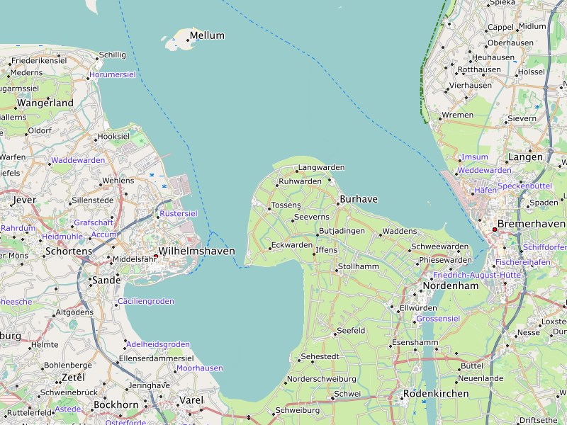

Basisdaten
Die Freizeitkarten "Herbst 2025" basieren auf den OpenStreetMap-Daten vom 25.08.2025.
Vielen Dank an alle Mapper die Daten hierzu beigetragen haben.
Ergänzungen / Veränderungen in der Ausgabe "Herbst 2025":
- Verbesserung der Kartendaten durch das OSM-Projekt.
Hinweis
Für Benutzer von Microsoft Windows und BaseCamp empfehlen wir die neuen GMAP Installer zu verwenden. Der Grund dafür ist, dass der frühere Windows Installer in BaseCamp keine Höhenprofile
anzeigt. Genaueres zur Installation mit GMAP Installer kann auf der Installationsseite nachgelesen werden.
Nächste Ausgabe
Die nächste Ausgabe der Freizeitkarten (1/2026) erscheint voraussichtlich im Januar 2026.
Support / Forum
Aus Zeitgründen können wir keinen individuellen Support leisten. Im 'geoclub' gibt es jedoch ein Freizeitkarte-Forum, wo neben den Freizeitkarte-Entwicklern auch viele Kartennutzer und
Poweruser bei Fragen weiterhelfen:
Link: Freizeitkarte Support-Forum

Der Jadebusen hat mit 3,7 Metern den höchsten Tidenhub an der deutschen Küste.
Downloads via Kartenverzeichnis
Erfahrene Benutzer können die Karten auch direkt aus dem Kartenverzeichnis laden.
Link: Kartenverzeichnis